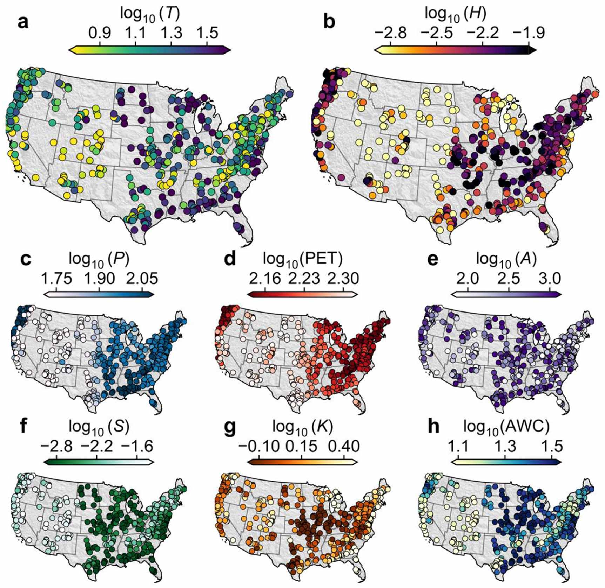

01
Climate and Landscape Controls on Rainfall–Runoff Response

- More than three-fourths of the studied catchments (516 CAMELS-US catchments) exhibit streamflow responses that are too rapid to be captured by conventional analyses of daily rainfall–runoff data.
- Our results reveal a decoupling of the main controls on peak height per unit rainfall and peak lag.
- Our results highlight the distinct yet interrelated roles of climate, topography, and subsurface properties in shaping rainfall–runoff response.
Related publication
Li, M., Seybold, H., Beria, H., Floriancic, M., Fu, X., Raymond, P., & Kirchner, J.W. (2026).
Controls on the magnitude and timing of runoff response to rainfall across the continental US.
Environmental Research Letters, 21, 054017.
DOI